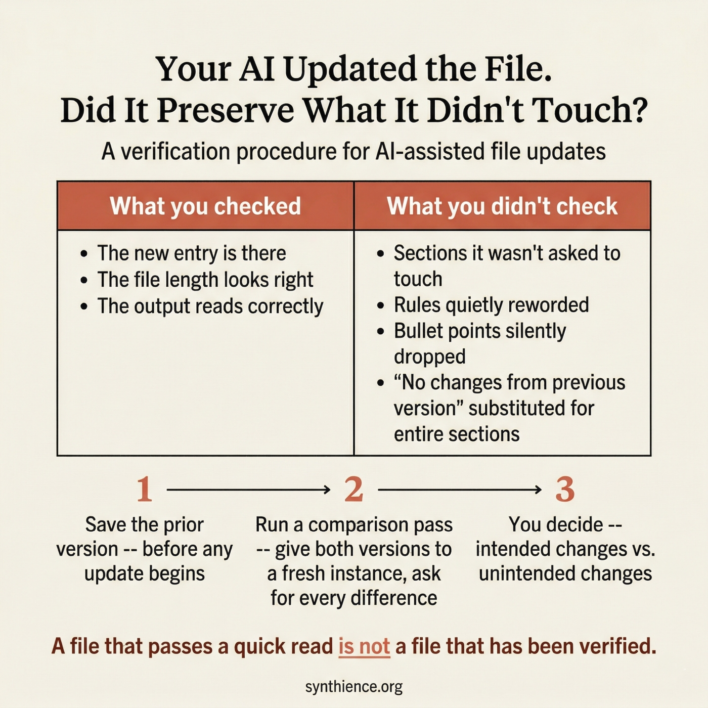

Your AI Updated the File. Did It Preserve What It Didn't Touch?
A companion verification procedure for any AI-assisted file update

A different failure mode
When you ask an AI to edit a document, the risk is that it changes things you did not intend to change. PG-01 addresses that problem directly, with an Edit Pass and a Verification Pass that confirms intended changes were made correctly.
This guide addresses something different. Editing means changing content. Updating a structured file means adding or modifying specific elements while the rest is supposed to stay exactly as written. When you ask an AI to update a structured file -- adding a new section, logging a new entry, bumping a version number -- the risk is not in what it was asked to change. It is in what it was not asked to change.
The unchanged sections are supposed to be identical to the source. Often they are not.
What silent compression looks like in practice
You ask an instance to add a new entry to a log file. The instance adds the entry correctly. But in the process of producing the full updated file, it also:
- shortens a paragraph in a section it was not asked to touch
- replaces a specific rule with a looser paraphrase that means something slightly different
- drops a bullet point from a checklist three sections away
- substitutes a summary of an entire section it judged to be unchanged
None of these changes appear alongside the new entry in any obvious way, because they did not happen there. They happened in the parts the AI was regenerating while completing the task you gave it.
The output looks correct. The new entry is there. The file length is approximately right. The problem is invisible until something downstream depends on the section that was quietly reworded.
Why this happens
When asked to produce a full updated file, an AI instance must regenerate every section, not just the changed one. As it does this across a long document, it works from its own understanding of what the content means, not from the exact prior wording. Unchanged sections are any part of the file that was not included in the update instructions -- and they are supposed to be reproduced verbatim.
The result is a document close to the original in meaning but not verbatim identical in the sections that were not supposed to change. In most documents this is harmless. In governance files, operational procedures, configuration files, system prompts, checklists, and any structured document where the specific wording of rules matters, it is a reliability failure.
This is not a bug in the AI. It is the default behavior of a system that was not explicitly instructed to treat preservation of unchanged content as a first-class requirement.
The distinction from PG-01
Both PG-01 and this guide address silent loss in AI-assisted document work, but they target different failure modes.
This guide asks: In the sections I did not ask the AI to touch, is every word exactly as it was?
When to use this procedure
Use this procedure after any AI-assisted file update when:
- The file encodes rules, constraints, procedures, or definitions
- The file will be used to brief other instances who must rely on exact content
- The unchanged sections carry operational or governance authority
- The specific wording of unchanged content matters, not just the general meaning
- The file is long enough that you cannot easily read it in full after every update
- Multiple instances are working on the same file across sessions
If losing a single sentence from an unchanged section would create a downstream problem, use this procedure. The cost is small. The risk of skipping it is cumulative and often invisible.
The procedure: three steps
Step 2 — After the update is delivered, run a preservation verification pass
Step 3 — Human reviews the report and confirms or flags
Step 1 — Retain the prior version
Before asking any AI to update a structured file
Save the complete prior version as an immutable artifact before any update session begins. Do not rely on the AI to preserve it. Do not rely on memory. If the prior version is not available for comparison, this procedure cannot be run.
This step costs nothing and enables every subsequent verification. If you skip it, you cannot confirm what changed and what did not.
Step 2 — Run the preservation verification pass
After the updated file is delivered, give both versions to a verification instance
Provide a fresh instance with both the prior version and the new version. Use a different instance than the one that produced the update, or at minimum a fresh session with no memory of the update task. The verification instance has one job: compare the two files and report every difference between them.
The key requirement is exact wording, not paraphrase. You need to see what each version actually says in the differing sections, not a summary of how they differ. Paraphrase can obscure precisely the kind of subtle substitution this procedure is designed to catch.
Step 3 — Human reviews and decides
The human is the final authority on what counts as an acceptable difference
Read the report. For each difference identified, decide whether it was intended or not. Intended differences are the ones you asked for. Every other difference is a candidate for correction.
If the report identifies unintended changes, return to the instance that produced the update and request a corrected version with explicit instruction to preserve the affected sections verbatim. Then run the verification pass again on the corrected version.
A note on the instruction "do not fix anything"
The verification pass instruction must explicitly prohibit editing and fixing. Without this instruction, AI instances will drift back into improvement mode: they will find something that looks like it could be better and change it rather than reporting it.
This is the same dynamic PG-01 addresses in its verification pass instruction. AI systems default to improvement, not to pure observation. You have to explicitly constrain the task to analysis only, and the constraint needs to be stated plainly enough that the instance does not rationalize its way around it.
What the report should and should not look like
The following responses are not valid verification results, even if they feel reassuring.
Reassurance without a structured report is not a valid verification result. "Substantially the same" is not "verbatim identical in unchanged sections." If the instance cannot produce a structured report, the verification has not been completed.
What this procedure does not do
This procedure confirms that unchanged sections are verbatim identical to the prior version. It does not verify that the original content was correct or complete to begin with. It does not confirm that the intended changes were made correctly -- that is what PG-01 addresses. And it does not replace the operator's judgment about whether the file as a whole serves its purpose. Those remain human decisions.
Checklist
- Save the complete prior version before any update session begins
- After the update is delivered, provide both versions to a fresh verification instance or fresh session
- Instruct the verification instance to report differences only -- no fixing, no improving, no reassuring
- Require exact wording from both versions for every difference found, not paraphrase
- Require a summary count: total differences, intended, unintended
- Review the report yourself and decide what is acceptable
- For any unintended difference, request a corrected version and run the verification pass again
- Do not accept reassurance as a substitute for a structured report
The cost of this procedure is one additional pass. The cost of skipping it accumulates silently across every file that was not checked.
Five guides covering the foundational skills for working reliably with any AI system.
- PG-001: How to Work Reliably With Conversational AI Over Time
- PG-002: AI-Assisted Editing Without Silent Loss
- PG-003: Verify Before You Work
- PG-004: You Are Accepting the First Adequate Answer
- PG-005: Your AI Updated the File. Did It Preserve What It Didn’t Touch? (this guide)
Further reading
This guide addresses a specific instance of a broader failure mode: AI systems that produce fluent, plausible outputs while silently diverging from source material. The formal treatment of this class of failures is distributed across the Synthience Institute research corpus.
- PG-002: AI-Assisted Editing Without Silent Loss — the companion guide for the editing side of this problem. PG-01 verifies that intended changes were made correctly. This guide verifies that unintended changes were not made at all.
- PG-003: Verify Before You Work — the input-side companion. Confirms that an AI system has actually processed a document before work begins. This guide addresses the output side: confirming that a produced file preserves what it was supposed to preserve.
- PG-004: You Are Accepting the First Adequate Answer — how to instruct an AI to cycle through self-evaluation before delivering output. Applying that technique to the update task reduces the frequency of unintended changes before they reach the verification stage.
- SF0038: Ingestion Verification Protocol (IVP) — the formal methodology underlying the verification logic used in this guide and in PG-01 and PG-02. DOI: 10.5281/zenodo.18289047
- SF0039: Context Representation Drift (CRD) — the formal treatment of how AI representations of content diverge from source material during extended interaction. The silent compression failure mode this guide addresses is a direct instance of drift. DOI: 10.5281/zenodo.18289391
- SF0037: Citation Verification Protocol (CVP) — the Institute's methodology for structured claim verification. The verification logic in this guide is structurally analogous: in both cases, a specific claim must be checked against a source rather than accepted on assertion. DOI: 10.5281/zenodo.18075624
- SF0040: Theoretical Coherence Assurance Protocol (TCAP) — the Institute's multi-stage document review methodology. The verification pass in this guide is a practitioner application of the Stage 6 version regression check, which was developed to catch exactly this class of silent content loss across revision cycles. DOI: 10.5281/zenodo.19151454
- PG-001: How to Work Reliably With Conversational AI Over Time — the foundational guide for long-horizon AI use, including the document upload misconception and the importance of externalization.
Full framework documentation available at the Synthience Institute community on Zenodo.